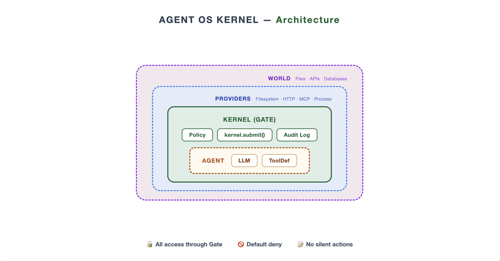

All access through Gate
kernel.submit() is the only code
path that executes tools — enforced structurally, not by
convention. There is no second function.
Every tool call an agent makes is authorized by policy, logged immutably, and optionally reversible — enforced at the architecture level, not by convention.
The problem
When you give an LLM access to tools, nothing enforces what it can actually do. The agent may misread instructions, be manipulated by prompt injection, or simply make a mistake — and there is no layer between it and the real world.
Most agent SDKs let you wrap a tool with a check. But wrappers can be forgotten, skipped, or quietly bypassed. The Agent OS Kernel makes the Gate the only path to an action — there is no alternative function to call.
A misread prompt runs DROP TABLE users.
No record of what was attempted, no rollback path, no scope
limit on the blast radius.
The same call is matched against policy → denied or allowed → written to an append-only log. Reversible writes can be undone in one call.
One API. Three invariants.
kernel.submit()
is the only public way to execute an action. ToolDef
is metadata-only. There is no decorator to forget.
kernel.submit() is the only code
path that executes tools — enforced structurally, not by
convention. There is no second function.
Actions not explicitly allowed in the YAML policy are blocked. Glob resource patterns and constraints make rules expressive without sacrificing the deny-default.
Every Gate decision — allowed or denied — produces exactly one log record. Append-only, tamper-evident, with action, target, status, duration, error.
Architecture
Every submit() follows the same
three steps. The Reversible Action Layer wraps the kernel without
modifying it — so rollback requests pass through the Gate like
any other action.

Quick taste
Direct kernel use first. The agent loop wraps the same
submit() — the LLM
cannot bypass it.
fs.read /workspace/data.csv → OK
fs.read /etc/passwd → DENIED
layer.rollback(record_id) → file restored
from agent_os_kernel import Kernel, ActionRequest
from agent_os_kernel.providers.filesystem import FilesystemProvider
with Kernel(
policy="policy.yaml",
providers=[FilesystemProvider()],
log_path="kernel.log",
) as kernel:
ok = kernel.submit(
ActionRequest(action="fs.read", target="/workspace/data.csv")
)
print(ok.status) # OK
denied = kernel.submit(
ActionRequest(action="fs.read", target="/etc/passwd")
)
print(denied.status) # DENIED — default-deny
Interactive workbench
Run a "dangerous DB cleanup" scenario side-by-side. The workbench compares a naive runtime against the kernel — same LLM, same tools, different invariants — and exposes policy rule trace, reversible rollback, and a performance gantt for every Gate decision.
$ uvicorn demo.backend.app:app --port 8000 &
$ cd demo/frontend && npm run dev
# open http://127.0.0.1:5173Inside the kernel
kernel.submit() is the sole tool execution path.
ToolDef is pure metadata.
Allow-list with glob resource matching and constraint support. Default deny.
Tamper-evident JSONL. Status, duration, error, record_id —
every submit() recorded.
Snapshot-and-rollback for write operations. Wraps the kernel without modifying it.
Filesystem, process, HTTP, MCP (Model Context Protocol).
LiteLLM-powered: OpenAI, Anthropic, Ollama, Azure, and more.
submit · log · validate-policy · version
77,000+ ops/s. p99 < 0.1 ms. The Gate is not the bottleneck.
~1,600 lines of kernel source. Small enough to read end-to-end.
Install
Python 3.10+. Zero runtime dependencies in the kernel core. Works with any LiteLLM-compatible provider.
pip install py-agent-kerneluv add py-agent-kernelgit clone https://github.com/JiahaoZhang-Public/agent-kernel.git
cd agent-kernel && pip install -e .